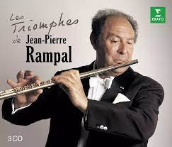
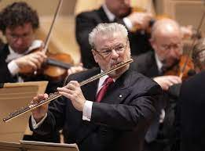
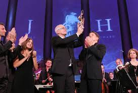
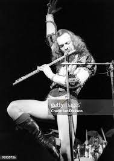
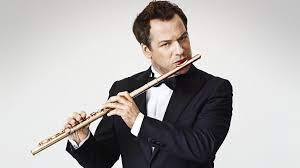

Artistas
Algunos ejemplos de reconocidos flautistas traversos de diferentes estilos musicales:
- Jean-Pierre Rampal: Considerado uno de los flautistas más influyentes del siglo XX, Rampal fue un virtuoso de la flauta traversa clásica y barroca. Su técnica impecable y su expresividad musical lo convirtieron en un referente para generaciones posteriores de flautistas. 
- James Galway: Conocido como "El hombre de la flauta de oro", Galway es uno de los flautistas más famosos del mundo. Ha interpretado una amplia gama de estilos musicales, desde música clásica hasta pop y música tradicional irlandesa, y ha colaborado con numerosos artistas y compositores de renombre. 
- Sir James Newton Howard: Este renombrado compositor de bandas sonoras también es un talentoso flautista traverso. Ha trabajado en la industria cinematográfica durante décadas y ha contribuido con la música de películas icónicas como "El Rey León", "El Sexto Sentido" y "El Caballero de la Noche". 
- Ian Anderson (de Jethro Tull): Como líder de la banda de rock progresivo Jethro Tull, Ian Anderson es famoso por su habilidad para tocar la flauta traversa en un contexto de rock. Su estilo distintivo y su presencia en el escenario han dejado una marca indeleble en la música rock de los años 70 y más allá. 
- Emanuel Pahud: Principal flautista de la Orquesta Filarmónica de Berlín, Pahud es ampliamente reconocido como uno de los flautistas más destacados de su generación. Su virtuosismo y versatilidad lo han llevado a colaborar con importantes directores y orquestas de todo el mundo. 